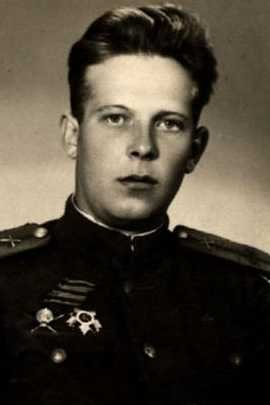

Семидалов; Семидолов Владимир Викторович
Дата рождения22.06.1922
Место рожденияКрасноярский край, с. Балахта; Красноярский край Балахтинский район село Балахта; Красноярский край, Балахтинский р-н, с. Балахта; Красноярский край, г. Красноярск; Красноярский край, ст. Балохба
Место призываКагановичский РВК, Красноярский край, г. Красноярск, Кагановичский р-н
Место службы523 опаб 118 УР 6 гв. А; 27 зап МВО; 523 отд. пулаб 3 Уд. А КалФ; 523 отд. пулаб 18 Уд. А; 396 отд. пулаб; МВО; 280 ап 146 сд 74 ск; 523 опулаб 118 УР; 523 опаб 118 УР 1 Уд. А 2 ПрибФ
Воинское званиест. лейтенант; капитан; мл. лейтенант; лейтенант
НаградыОрден Красной Звезды; Медаль «За победу над Германией в Великой Отечественной войне 1941–1945 гг.»; Орден Отечественной войны II степени
ИсторияСт. лейтенант, 22.06.1922, Красноярский край, с. Балахта, Место службы: Кагановичский РВК, Красноярский край, г. Красноярск, Кагановичский р-н, 523 опаб 118 УР 6 гв. А
ID 123045126
ID 123045126